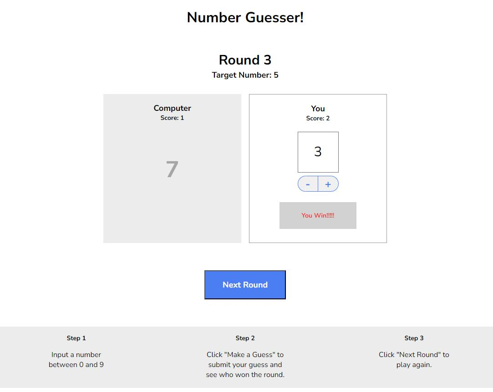

About Me
From Insurance Pro to Creative Coder: Exploring the World of Web Development
Introduction:
My journey into web development started with a friend's request to build a website using Wix. Intrigued by the process, I soon discovered a deeper fascination with crafting web experiences. Seeing my friend, a talented web developer, fueled my passion even further. I wanted to understand the magic behind those user-friendly interfaces and visually appealing layouts.
Skills and Interests:
Drawn to the visual aspects of web development, I'm currently immersing myself in the world of front-end technologies like HTML, CSS, and JavaScript. I find it incredibly satisfying to see my code come to life as interactive and visually engaging elements. While new to coding, I bring over 15 years of experience from the insurance industry, honing skills like problem-solving, communication, attention to detail, and teamwork. These skills perfectly complement my approach to learning and collaborating.
Journey and Goals:
I'm currently learning through platforms like Codecademy, enjoying the challenges and breakthroughs that come with every new concept mastered. My short-term goal is to land a junior web developer position, eager to contribute my skills and learn from experienced professionals. My long-term dream is to follow in my friend's footsteps and eventually become a leader in the field, guiding and mentoring others.
Call to Action:
I'm excited to see where this journey takes me, and I'm always open to connecting with other passionate developers or learning opportunities. Feel free to explore my portfolio to see my progress and get a glimpse into my creative vision.
Projects
» Springbok Fantasy Club

Embark on a virtual journey into the world of rugby fandom with this fan-made club page dedicated to the Springbok rugby team. Immerse yourself in the team's history, achievements, and passionate community. Stay updated with the latest news, connect with fellow fans, and celebrate the spirit of rugby in a uniquely digital space.
» Vertical Ascent

Experience the thrill of rock climbing from the comfort of your screen with Vertical Ascent. This interactive preview takes you on a visual adventure through a comprehensive rock climbing website. Discover breathtaking climbing destinations, browse gear reviews, and connect with a community of climbers. Whether you're a seasoned pro or a beginner, Vertical Ascent is your gateway to the exhilarating world of rock climbing.
» Number Guesser
Challenge your mind and test your intuition with this dynamic Number Guesser game crafted using JavaScript. Dive into a world of random numbers, clever algorithms, and interactive gameplay. Sharpen your guessing skills, compete against the computer, and enjoy an engaging experience that combines logic and fun. Perfect for honing your JavaScript skills while enjoying a classic game of numerical wit.
Skills